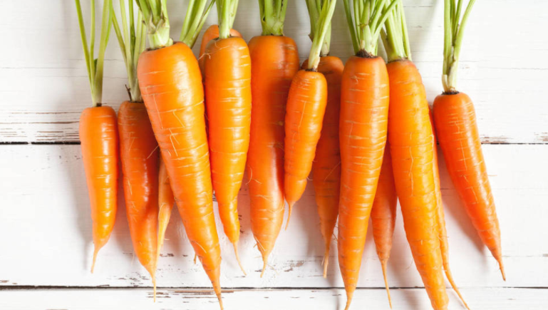

Estos alimentos ayudan a cuidar la vista
Ciertas enfermedades oculares, como la degeneración macular o las cataratas, se podrían prevenir con una dieta específica rica en vitamina A, C, D, E, ácidos grasos omega 3 y zinc
La salud ocular puede depender más de la alimentación de lo que pensamos. Es cierto que hay algunos factores que aceleran un problema en nuestra vista (hereditarios, edad, hábitos incorrectos…), pero con una dieta correcta podremos obtener beneficios sobre nuestros ojos y frenar la aparición de ciertas enfermedades… o al menos retrasarlas.
La salud ocular puede depender más de la alimentación de lo que pensamos. Es cierto que hay algunos factores que aceleran un problema en nuestra vista (hereditarios, edad, hábitos incorrectos…), pero con una dieta correcta podremos obtener beneficios sobre nuestros ojos y frenar la aparición de ciertas enfermedades… o al menos retrasarlas.
Entre ellos, la vitamina A o los ácidos grasos omega 3 son esenciales para cuidar la vista. Más concretamente, las espinacas, las naranjas, el huevo, el salmón o las zanahorias son algunos de los alimentos que no pueden faltar en nuestra alimentación si queremos prevenir ciertos problemas oculares.
¿Qué es la degeneración macular?Nos detenemos concretamente en esta enfermedad ya que es una de las más habituales en personas mayores de 60 años y que se podría retrasar con una dieta adecuada. La degeneración macular tiene lugar en la retina, concretamente en la parte de atrás del ojo, y es la encargada de una visión nítida. Contiene dos pigmentos, luteína y zeaxantina, y cuando se produce este trastorno se dificulta la visión central.
Existen ciertas sustancias que se relacionan con la disminución del riesgo de sufrir algunas enfermedades de este campo, especialmente las cataratas y la degeneración macular. Aunque hay factores contra los que no podemos luchar, como la edad, estrechamente relacionada con ambas, sí que podemos prevenirlas o al menos intentar retrasar su aparición y sus efectos a través de la alimentación.
Los carotenoides, que se encuentran en vegetales y frutas, son claves para proteger la salud ocularLas vitaminas son esenciales para el cuidado de la vista y las tres principales son las siguientes. Destaca especialmente la vitamina A, que, tal y como cuenta el oftalmólogo Fernández-Vega, “junto con la luteína y la zeaxantina reduce el riesgo de desarrollar enfermedades oculares como las cataratas”. Los carotenoides se encuentran fundamentalmente en vegetales y frutas, como la zanahoria, los melocotones o los arándanos, pero también en lácteos.
Otra de las vitaminas básicas para proteger nuestros ojos es la vitamina C, la cual no solo refuerza nuestras defensas y el sistema inmunológico, también ayuda a filtrar la radiación ultravioleta del sol y es favorable para reducir la aparición de problemas en el cristalino y en la retina. El pimiento, las naranjas, el kiwi o las fresas son algunos de los alimentos ricos en vitamina C.
La vitamina E es otro de los elementos relacionados con la prevención de las cataratas o la degeneración macular gracias a su alto poder antioxidante que, entre otras cuestiones, evita el estrés oxidativo. La podemos encontrar en aceite de oliva, aguacates, almendras o espinacas.
Los ácidos grasos omega 3 son otros de los nutrientes esenciales para el cuidado de la vista. En este caso, destaca su acción contra la degeneración macular y la enfermedad del ojo seco. El pescado azul es la principal fuente de ácidos grasos omega (salmón, sardinas, boquerones…), pero también los localizamos en otros ingredientes, como los aguacates o el aceite de oliva.
Por último, destacamos entre los minerales que protegen nuestra vista el zinc, un oligoelemento que actúa de manera positiva sobre la retina, además de en algunas de las principales reacciones bioquímicas del organismo. En la alimentación podemos localizar el zinc en las legumbres, las gambas o la ternera.
La luteína merece un reconocimiento especialEs cierto que cuando hablamos de proteger la salud ocular a través de los alimentos pensamos especialmente en vitamina A y ácidos omega 3, pero existe un nutriente concreto que tiene un efecto muy positivo sobre nuestra salud y que no es tan conocido como otros.
La luteína es un tipo de carotenoide cuya función principal es la de proteger a la retina de la incidencia de los rayos del sol. Es decir, dicho de una forma sencilla, podemos considerar que actúa como 'filtro' para las radiaciones solares, tan peligrosas para nuestra vista. De hecho, nuestros propios ojos tienen luteína en la mácula, pero también algunos alimentos la contienen, reforzando así sus efectos positivos.
Es un pigmento amarillo conocido coloquialmente como la vitamina de los ojos y que se puede encontrar en frutas y verduras de color naranja y amarillo, además de otras como las coles, las espinacas, el brócoli, los guisantes o incluso los huevos. Otros de los beneficios de la luteína son prevenir el estrés oxidativo, tratar la diabetes e incluso proteger el corazón.
¿Qué alimentos dañan nuestra vista?Ya hemos visto cuáles son mejores ingredientes para proteger los ojos, pero es importante conocer también aquellos que tienen efectos negativos sobre ellos.
El principal enemigo de la vista es la grasa saturada. Esto se explica por el taponamiento de venas y arterias, lo cual puede afectar a aquellas que llegan hasta los ojos. Un efecto similar tiene los azúcares, por lo que también debemos evitarlos. La bollería industrial, los embutidos, las mantequillas, la nata o los precocinados suelen ser alimentos ricos en grasas saturadas y/o azúcares añadidos.
Ante todo, lo que hemos visto, podemos concluir que la mejor dieta para proteger la vista es aquella rica en frutas, verduras, legumbres y pescado azul, debiendo evitar los ultras procesados, las grasas y los azúcares. Las vitaminas, los carotenoides, los antioxidantes y los ácidos omega 3 serán nuestros mejores aliados para lograr este objetivo.
Fuente: https://www.alimente.elconfidencial.com/bienestar/2019-06-23/alimentos-para-cuidar-tu-vista_2068930/